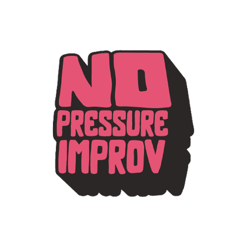

Unlike traditional improv jams which focus on playing for an audience, our format of jams take inspiration from musical jams. While we do have a facilitator who leads the jam (Thematically), the focus is on getting a bunch of improvisers together and having FUNNN - No Pressure!
These events are similar to our in-person jams but are conducted online and are accessible from anywhere in the world! We focus on creating and maintaining connections regardless of the distance! We have some repeated formats of online jams that we run regularly including but not limited to:
The 5 minute club | Reading room | Improv games | Online workshops
A space to experiment with ideas and trial exercises not explored yet. A testing ground to develop an idea into a jam or a workshop. All we ask is that you come with an open mind.
Our long term vision with No Pressure Improv is to make doing improv as popular as attending the movies and for people serious about this art form to be able to make a living out of it. Those goals are only strengthened by putting out excellent productions.
The first step is to host shows by enthusiastic ensembles such as The Fishbowl, Mobius Trip and The 6 hour improv marathon.
We host a range of expert facilitators, both international and local, who teach improv for performance as well as applied improv.
Workshops we've hosted in the past include but are not limited to:
Long form narrative improv | Character work | Treteau | Musical improv | Freestyle improvised rap